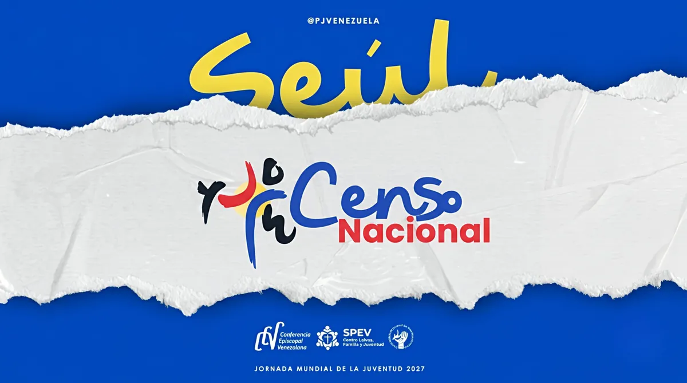
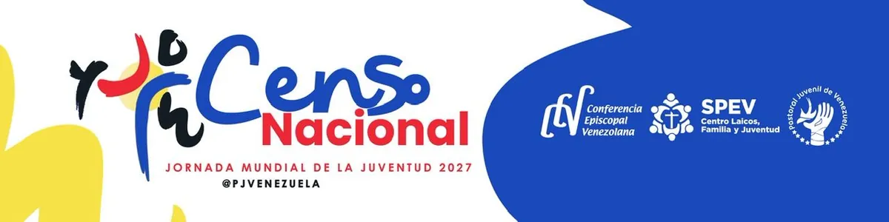

Jornada Mundial de la Juventud, Seúl 2027
La Jornada Mundial de la Juventud de 2027 es en Seúl, Corea del Sur, del 3 al 8 de agosto. Desde el 4 de septiembre de 2026, el Área de Juventud del Centro lleva un censo nacional de peregrinos venezolanos, que no es la inscripción oficial.
Datos del evento
- Fecha
- Del 3 al 8 de agosto de 2027
- Hora
- Se publica en el sitio oficial. Referencia: hora de Venezuela (UTC-4).
- Modalidad y lugar
- Presencial · Seúl, Corea del Sur
- Organiza
- Jornada Mundial de la Juventud, Seúl 2027 (comité organizador)
- Estado
- Anunciado (fechas según Infovaticana)
Información disponible
Las fechas, del 3 al 8 de agosto de 2027, las dan Infovaticana y Diario Católico. El sitio oficial de la Jornada es wydseoul.org.
Según Infovaticana (nota del 23 de octubre de 2026), la inscripción oficial abrió el 22 de octubre con un videomensaje del papa León XIV. Se hace por grupos, de preferencia a través de parroquias, diócesis, movimientos y comunidades.
El Área de Juventud abrió el censo para responder a una petición del comité organizador, que pidió a las conferencias episcopales una estimación de participantes por país. Es para jóvenes, coordinadores y peregrinos que viajarán por sus propios medios.
La hora en Seúl es UTC+9. Venezuela (UTC-4) está 13 horas atrás.
El Censo Nacional de Peregrinos es un trámite del Área de Juventud del Centro, pedido por el comité organizador. No equivale a la inscripción. Si piensa viajar, lea la nota de la CEV para saber cómo participar en el censo y use el sitio oficial de la Jornada para plazos, condiciones e inscripción.
Leer la nota de la CEV sobre el Censo Nacional de Peregrinos
Galería

Jornada Mundial de la Juventud, Seúl 2027, Seúl, Corea del Sur, del 3 al 8 de agosto de 2027. Afiche del Censo Nacional JMJ Seúl 2027 de la Pastoral Juvenil de Venezuela. Crédito: CEV Medios, fuente: Centro de Laicos Familia y Juventud. 
Jornada Mundial de la Juventud, Seúl 2027, Seúl, Corea del Sur, del 3 al 8 de agosto de 2027. Logo del Censo Nacional, jornada mundial de la juventud 2027, con los emblemas del SPEV y el Centro. Crédito: CEV Medios, fuente: Centro de Laicos Familia y Juventud.
Fuentes
- Conferencia Episcopal Venezolana: inicia el Censo Nacional de Peregrinos rumbo a la JMJ Seúl 2027 (nota del 4 de septiembre de 2026)
- Sitio oficial de la Jornada Mundial de la Juventud, Seúl 2027
- Infovaticana: León XIV abre las inscripciones a la JMJ de Seúl 2027 (23 de octubre de 2026)
- Diario Católico: inician censo nacional para jóvenes venezolanos que asistirán a la JMJ Seúl 2027